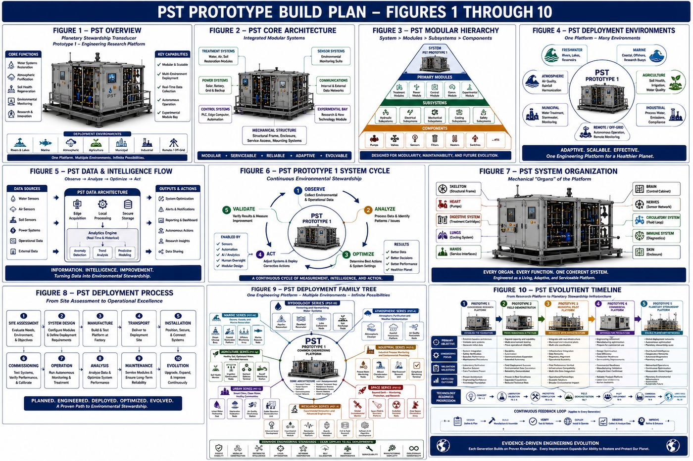
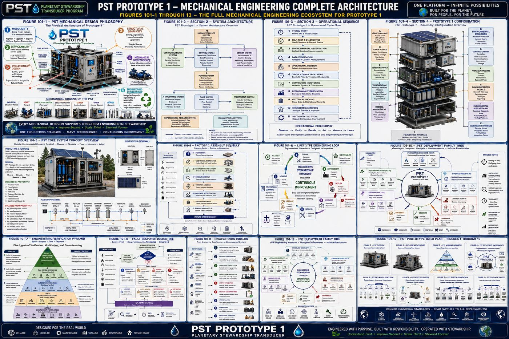
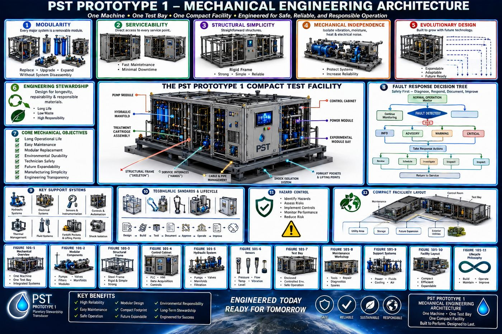
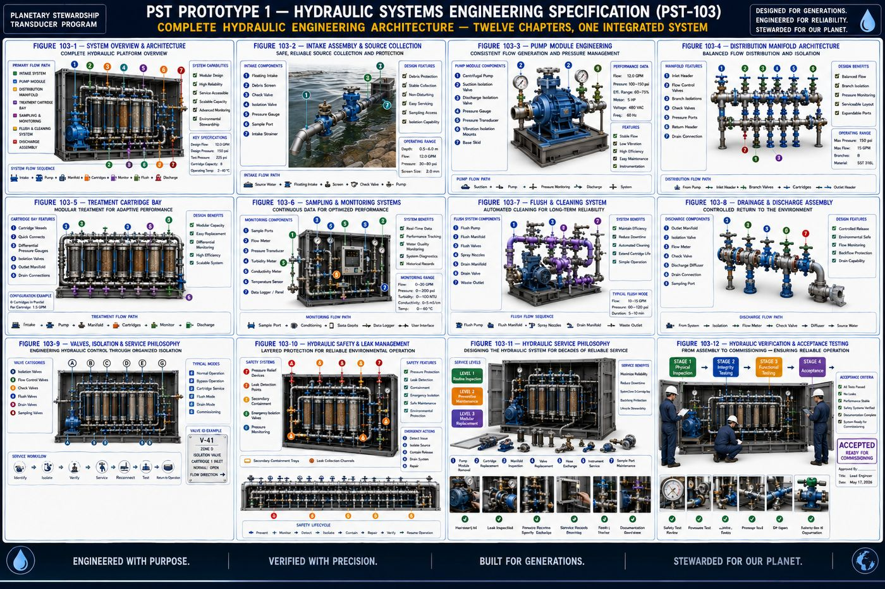
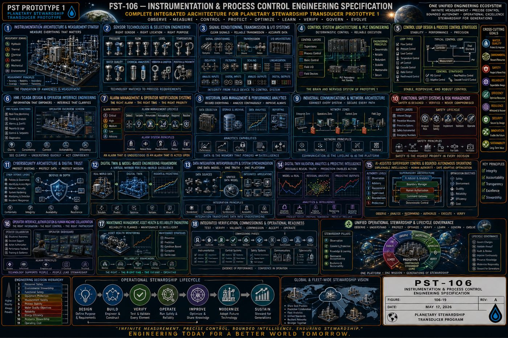

Document Note
This page summarizes an eight-volume, multidisciplinary engineering specification spanning mechanical, electrical, hydraulic, controls, structural, instrumentation, and civil engineering. It is presented at the level of program philosophy and system architecture, consistent with the source document's own stated status: architecturally complete, with detailed calculations, component sizing, fabrication drawings, and a bill of materials still to follow. The complete specification is available under NDA.
The Planetary Stewardship Transducer (PST) is a modular environmental engineering platform designed to observe, circulate, treat, measure, and adapt to environmental conditions in a controlled field deployment. Prototype 1, the platform documented in this specification, is an engineering research and validation system rather than a final commercial product. Its purpose is to establish a repeatable systems architecture, spanning mechanical, electrical, hydraulic, control, and civil and structural disciplines, that can support future generations of environmental restoration technology.
This page presents the Prototype 1 engineering architecture developed under the Christos™ Regenerative Engineering Standard: a Prototype Build Plan defining program scope and configuration, a Mechanical Systems Engineering Specification, and the full multidisciplinary specification set covering electrical systems, hydraulic systems, controls and automation, structural engineering, instrumentation and process control, electrical power distribution, and civil, structural, and architectural engineering. Consistent with the standard this program follows throughout, the source document distinguishes established engineering practice from what remains to be validated. Prototype 1 is presented as architecturally complete, meaning every major subsystem is defined and every interface and verification process is documented, but not yet construction-ready.
I. Program Philosophy
1.1 Mission
Prototype 1 is designed to serve as an integrated environmental laboratory capable of continuously performing a defined operational cycle: Observe, Circulate, Treat, Measure, Verify, Adapt. Each stage is independently measurable, allowing subsystem performance to be validated before additional complexity is introduced. The prototype is designed to answer engineering questions through observation and testing rather than assumption.
1.2 Four Guiding Principles
The program follows four principles. Build conservatively: the initial platform relies primarily on established engineering practices and commercially available technologies wherever practical, reducing technical risk. Separate engineering from research: core engineering systems, built on established principles, are physically and functionally isolated from experimental research modules investigating emerging hypotheses, so experimental work cannot compromise baseline operation. Design for measurement: every subsystem is intended to produce measurable engineering data, including operating state, efficiency, health status, and diagnostic information, so engineering decisions are driven by evidence rather than expectation. Design for evolution: Prototype 1 is not expected to represent the final configuration; it establishes a stable architecture capable of supporting progressive refinement through successive prototype generations.
1.3 Scope and Intended Applications
Prototype 1 addresses five engineering objectives: platform validation, demonstrating reliable integration of structural, electrical, hydraulic, sensing, communications, and control systems; environmental monitoring, acquiring continuous measurements of water quality, soil conditions, atmospheric conditions, and system performance; modular treatment evaluation, providing standardized interfaces for comparative testing of interchangeable treatment cartridges; operational reliability, demonstrating stable field operation with graceful degradation during abnormal events; and engineering learning, establishing a feedback loop in which operating observations inform future design revisions.
Intended deployment environments include freshwater shorelines, agricultural research sites, wetland restoration projects, university field stations, environmental laboratories, pilot-scale municipal installations, and industrial demonstration projects. Prototype 1 explicitly does not attempt to demonstrate or validate planetary-scale environmental intervention; planetary climate modification, global atmospheric intervention, large-scale hydrological modification, and autonomous regional environmental management are all explicitly out of scope for this stage, along with any dependence on experimental energy technologies for baseline operation.
1.4 Definition of Success
Prototype 1 is considered successful when it demonstrates the ability to operate continuously under representative field conditions, collect reliable environmental measurements, execute controlled treatment cycles, document measurable system performance, support modular component replacement, and provide repeatable engineering data for subsequent prototype generations. The primary deliverable of Prototype 1 is knowledge: a successful prototype is defined not by the complexity of its technology but by the quality, reproducibility, and usefulness of the engineering evidence it produces.
II. System Architecture: Nine Engineering Systems
Rather than a single monolithic machine, Prototype 1 is divided into nine specialized subsystems communicating through standardized mechanical, electrical, hydraulic, and digital interfaces.
| System | Function |
|---|---|
| A — Structural | Mechanical support, environmental protection, service access, vibration control, transportation interfaces |
| B — Power | Receiving, conditioning, storing, and distributing electrical power, independent of any specific energy source |
| C — Control | Sensor integration, data acquisition, decision support, actuator control, diagnostics, and historical logging; coordinates but does not replace subsystem-level engineering safeguards |
| D — Sensor | Continuous observation of hydrology, atmosphere, soil, and the platform's own mechanical, electrical, and thermal condition |
| E — Fluid | Intake, circulation, treatment routing, sampling, flushing, bypass, and controlled discharge |
| F — Treatment | Interchangeable environmental processing modules: filtration, adsorption, biological media, mineral conditioning, and future validated research modules |
| G — Communications | Local monitoring, remote diagnostics, software updates, and data synchronization; safe operation must remain possible during communication loss |
| H — Experimental Research | Dedicated, electrically and hydraulically isolated space for future research modules, including new sensing technologies, alternative circulation geometries, and other investigations; the baseline platform remains fully operational regardless of this system's status |
| I — Human Interface | Status displays, indicator lighting, maintenance diagnostics, local controls, manual overrides, and inspection points |
No subsystem operates independently: the sensor system supplies the control system, which coordinates the fluid system, which delivers environmental media to the treatment system, whose effect the sensor system then verifies, forming a continuous engineering feedback loop. Critical environmental functions are designed for independence wherever practical, so that an electrical fault cannot corrupt environmental measurements and experimental software cannot disable baseline treatment.
III. Prototype 1 Configuration: Twelve Assemblies
Prototype 1 is organized into twelve major assemblies, each independently serviceable and connected through standardized interfaces, so the platform functions as cooperating engineering modules rather than one permanently integrated machine.
| Assembly | Purpose |
|---|---|
| A — Structural Base | The permanent mechanical foundation, including frame, lifting points, anchor locations, and equipment mounting; expected design life of 25 to 40 years with routine maintenance |
| B — Environmental Enclosure | Weather protection, personnel safety, controlled ventilation, and service access |
| C — Power Module | Incoming power connection, solar interface, battery storage, power conditioning, and emergency disconnect, replaceable without disturbing unrelated assemblies |
| D — Control Cabinet | Industrial controller, data acquisition hardware, communications equipment, and operator interface; the operational brain of the platform |
| E — Sensor Manifold | Centralized integration of hydrology, atmosphere, soil, machine health, and power monitoring sensors |
| F — Hydraulic Module | Intake manifold, pumps, valves, pressure monitoring, flow regulation, and maintenance flush system; the platform's circulatory system |
| G — Treatment Bay | Interchangeable cartridge families: mechanical filtration, adsorption media, biochar, mineral conditioning, biological treatment, and experimental modules |
| H — Communications Module | Remote diagnostics, software updates, data synchronization, and future distributed coordination; local operation remains independent of network availability |
| I — Experimental Research Bay | A standardized, physically isolated location for evaluating emerging concepts such as alternative materials, flow geometries, sensor technologies, or resonance and coil-configuration studies |
| J — Thermal Management | Passive ventilation, heat exchangers, air circulation, and temperature monitoring for electronics and instrumentation |
| K — Maintenance Interface | Inspection ports, diagnostic connectors, service lighting, and module labeling to minimize disassembly during routine servicing |
| L — Foundation Interface | Adapts the platform to different deployment environments, including concrete pad, steel skid, trailer platform, or marine dock, while the platform architecture itself remains consistent |
IV. Operational Sequence
Prototype 1 operates as a continuous cycle rather than a series of isolated tasks: Observe, Verify, Decide, Act, Measure, Learn. Following a controlled initialization sequence, including power verification, controller startup, sensor and actuator self-tests, and safety system validation, the platform establishes baseline environmental conditions across hydrology, atmosphere, and soil before any treatment begins. Observations pass through a verification process, sensor agreement, historical comparison, range validation, and rate-of-change analysis, before the control system selects the least intrusive operational response consistent with current objectives.
When treatment is required, circulation begins gradually while pressure, temperature, electrical load, and system stability are monitored, with unexpected conditions resulting in controlled interruption rather than continued operation under uncertainty. Each treatment stage records entry and exit conditions, module health, and energy consumption. Monitoring continues throughout regardless of treatment status; observation is described as the platform's primary engineering activity. Following treatment, current observations are compared against baseline to evaluate water quality improvement, flow stability, and treatment efficiency, with both successful and unsuccessful outcomes retained as engineering knowledge. Historical operating data may be analyzed for trends such as preferred operating schedules or maintenance intervals, but any adaptive behavior is required to remain transparent, reviewable, and within established engineering constraints, rather than autonomous decision-making beyond validated scope.

V. The Eight Engineering Volumes
The full specification is organized as eight discipline-specific volumes, each following the same structure: purpose and engineering intent, design philosophy, subsystem architecture, verification requirements, and a chapter summary, in the order the platform was engineered.
| Volume | Scope |
|---|---|
| PST-002 — Prototype Build Plan | Program scope, system hierarchy, operational sequence, configuration, interfaces, assembly philosophy, verification, safety, manufacturing, lifecycle, and deployment configurations |
| PST-101 — Mechanical Systems | Physical architecture: structural frame, enclosure, mechanical interfaces, treatment cartridge bay, thermal design, and service philosophy, organized into eight mechanical zones beginning with the structural foundation |
| PST-102 — Electrical Systems | Power architecture, battery storage, DC and AC distribution, grounding and bonding, wiring harness standards, and control cabinet layout, built around safety, modularity, and simplicity as core principles |
| PST-103 — Hydraulic Systems | Intake, pump module, distribution manifold, treatment cartridge bay, sampling, flush and cleaning, and discharge, built around controlled flow, modularity, serviceability, and measurement |
| PST-104 — Controls & Automation | Controller architecture, I/O architecture, sequencing and process control, alarm management, historian and data management, safety systems, and commissioning, governed by deterministic operation and human transparency |
| PST-105 — Structural Engineering | Load path analysis, material selection, fabrication and quality control, transportation and lifting, foundation and anchoring, and seismic and environmental resilience |
| PST-106 — Instrumentation & Process Control | Measurement strategy, sensor technology selection, signal conditioning, control loop design, cybersecurity, digital twin concept, and integrated commissioning |
| PST-107 — Electrical Engineering | Power distribution and protection, motor control centers and driven equipment, variable frequency drives, uninterruptible and emergency power, and grounding and lightning protection |
| PST-108 — Civil, Structural & Architectural | Site and geotechnical basis, the compact test facility, fire protection and life safety, utilities, materials and finishes, and construction sequencing through lifecycle governance |
5.1 Figure Library
Each volume closes with an engineering figure collage summarizing its subsystem architecture; selected supplementary figures are included where a volume documents a specific facility or fabrication standard.










Protected — Detailed Engineering Package
Detailed calculations, component sizing, material specifications, engineering drawings (PST-008), the bill of materials, fabrication packages, and test procedures are held under NDA pending requirements freeze and physics validation, consistent with the source specification's own stated pre-construction status.
Full Specification Available Under Signed NDA ↗VI. Development Roadmap
Prototype 1 is positioned as the first of five planned generations: Prototype 1, a research laboratory platform; Prototype 2, a field demonstrator; Prototype 3, a municipal pilot; Prototype 4, a commercial platform; and Prototype 5, the full-scale Planetary Stewardship Transducer. A long-term architectural objective is generational continuity, so that later prototypes remain able to communicate with and recognize data generated by earlier ones, keeping earlier deployments scientifically valuable rather than obsolete.
VII. Scope and Relationship to the Broader Framework
The Planetary Stewardship Transducer documented here is a conventional, conservatively engineered environmental platform: its baseline systems rely on established mechanical, electrical, hydraulic, and controls engineering practice, and the specification is explicit that any more speculative investigation, alternative materials, novel flow geometries, or resonance and coil-configuration research, is confined to the physically and electrically isolated Experimental Research Bay (System H, Assembly I), where it cannot affect baseline environmental operation. Readers should note this PST is a distinct engineering program from the Phi-Singularity Transmuter described in [[singularis-plasma-synthesis]] (MM-12); the two share an acronym and, in the inventor's long-range vision, a planetary-scale ambition, but this document's baseline architecture does not depend on or describe that system's anti-fragile chaos-to-coherence mechanism, and the two should be read as separate engineering efforts at this stage.
Closing
The source specification frames its own contribution plainly: Prototype 1 is not defined by any individual subsystem, but by the disciplined integration of specialized engineering systems into a unified environmental research platform, emphasizing modularity, measurement, maintainability, and scientific transparency. Future generations may introduce substantially different technologies while preserving the organizational principles established here.
Intellectual Property & Documentation Summary
The Planetary Stewardship Transducer Prototype 1 systems architecture, the nine-system and twelve-assembly organizational framework, the Observe-Circulate-Treat-Measure-Verify-Adapt operational cycle, and the eight-volume Christos™ Regenerative Engineering Standard are original work product of Joshua Farrior, developed under CHRISTOS™ Energy, Technology & Harmonic Design Consulting, LLC.
Held under NDA pending further development: detailed engineering calculations, component sizing and selection, material specifications, the complete engineering drawing package (PST-008), the bill of materials, fabrication packages, test and acceptance procedures, and any output of the isolated Experimental Research Bay.
© 2026 Joshua Farrior · Christos™ Energy, Technology & Harmonic Design Consulting, LLC · All Rights Reserved · Business ID: 202511071941923 · Christos™ trademark registered on the USPTO Principal Register · christosenergy.com